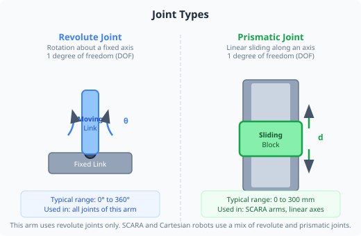
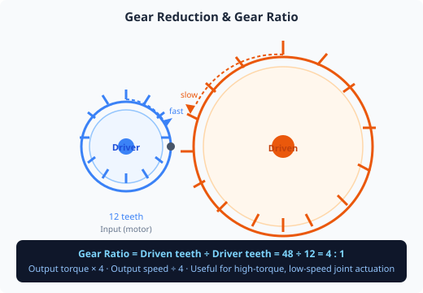
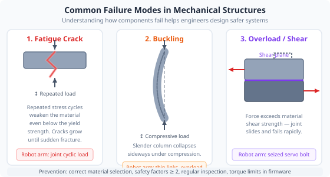

Duration: 2–3 hours · Prerequisites: Module 1 (Safety)

A robot arm is a kinematic chain — a series of rigid bodies (links) connected by joints. Understanding this structure is the starting point for analysing how forces and motion travel through the arm.
In a serial chain, an error or deflection at Joint 1 (the base) is amplified and carries through every link above it. This is why the base joint and shoulder joint must carry the heaviest loads and therefore use the most powerful servos.

Servo motors spin fast and produce relatively little torque. A gear reduction trades speed for torque — the output shaft spins more slowly than the motor, but with proportionally more force.
The relationship is simple: if the gear ratio is N:1, the output torque is N times the motor torque (ignoring friction losses), and the output speed is 1/N of the motor speed.
Backlash is the small amount of free play (dead zone) in the gear mesh. When the motor reverses direction, it must take up the backlash before the output shaft moves. In robot arms this causes positioning error when changing direction. High-quality servo gearboxes minimise backlash — zero-backlash designs exist but are expensive.
Before moving the physical arm, use the simulation mode sliders at the bottom of the 3D Visualisation panel to sweep each joint angle through its full range. This drives the 3D model only — it does not move the physical arm — so you can safely explore joint limits without risk.
Enable the Movement Envelope overlay in the 3D Visualisation toolbar. Note how the reachable volume changes as you move joints in simulation mode. This visualises the working envelope you sketched in Module 1.
Open the 3D Visualisation tab. Rotate the view so you can see the full arm from the side. Count and label each link and each joint — sketch this in your worksheet.
Estimate the length of each link by comparing the 3D model to the physical arm. Record these in the worksheet table.
Navigate to Joint Control. Carefully move Joint 1 to its minimum and maximum angles. Note both values. Repeat for each joint.
Move all joints to their midpoints (roughly 0° if the scale is centred). Observe how the arm looks in the 3D view. This is the home/neutral pose.
Move Joint 2 (shoulder) from its midpoint to its maximum upward angle. Watch how this affects the total height the end effector can reach. Note the approximate maximum reach height in the worksheet.

The choice of material for each component involves trade-offs between strength, stiffness, weight, machinability and cost.
| Material | Used for | Advantages | Disadvantages |
|---|---|---|---|
| Aluminium alloy | Structural links, motor mounts | High strength-to-weight ratio, machinable, corrosion-resistant | More expensive than steel, less stiff per kg |
| PLA / PETG plastic | 3D-printed brackets, covers | Very cheap, rapid prototyping, complex shapes | Lower strength, creeps under sustained load, temperature-sensitive |
| Steel | Shafts, fasteners, base plates | Very stiff and strong, wear-resistant | Heavy — increases load on lower joints |
| Carbon fibre composite | High-performance links | Excellent stiffness-to-weight | Expensive, difficult to machine, anisotropic |
Every gram of mass in an upper link must be supported by all the joints below it at full arm extension. A link that is 100 g heavier at the wrist can add over 1 Nm of additional torque demand at the shoulder joint depending on arm length. This is why engineers try to place heavy components (motors, batteries, processors) as close to the base as possible.
| Segment | Approx. length (mm) | Joint min (°) | Joint max (°) | Total range (°) |
|---|---|---|---|---|
Every movement you command through the software is ultimately a mechanical event. The accuracy of the end effector depends not just on the software telling the joint to go to a specific angle, but on whether the gearbox has backlash, whether the link bends under load, and whether the joint bearing has worn. Mechanical understanding stops you from blaming software for what is actually a mechanical problem.
Material selection is an engineering trade-off with no single right answer — it depends on the application, the budget, and the manufacturing process available. Understanding these trade-offs allows you to evaluate designs critically rather than just accepting the first choice.
Fatigue failure is particularly insidious because parts look fine until they suddenly break. In safety-critical systems, engineers design inspection intervals and replace components before they fail — not after. This is called predictive maintenance, and it is increasingly enabled by the kind of sensor data you read in Module 3.
1. A motor runs at 300 RPM and drives a 15:1 gearbox. What is the output shaft speed?
2. Which failure mode causes parts to break gradually under repeated loading, even if each individual load is well below the ultimate strength?
3. Why is aluminium alloy often chosen over steel for robot arm links?